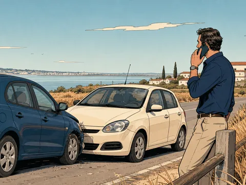
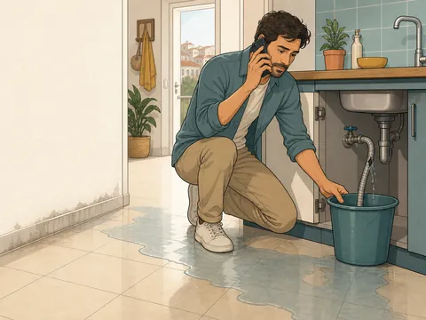
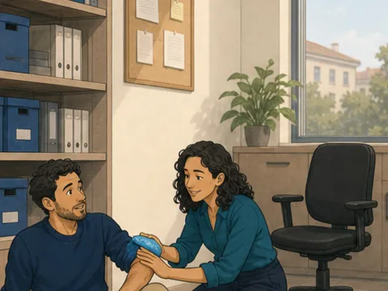
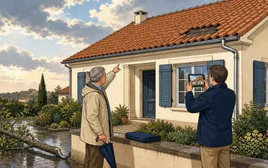
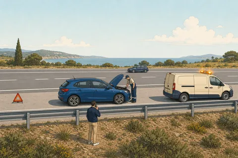

Participação
Damos entrada na companhia e recebe um número de sinistro. Guarde-o: é por ele que tudo passa.
O que fazer nas primeiras horas, os prazos e o que a companhia vai pedir. Ou ligue-nos: fazemos isto consigo ao telefone.
Se houver pessoas feridas, ligue 112 antes de mais nada. Nenhuma questão de seguros é mais urgente. O resto trata-se a seguir, connosco se quiser.
Nas primeiras horas
Conforme o caso
Reunir isto antes de ligar poupa dias. Se faltar alguma coisa, ligue na mesma — ajudamos a obter o resto.

Declaração amigável preenchida e assinada, fotografias, documentos do veículo e da carta de condução, e o auto das autoridades se tiverem sido chamadas.

Fotografias dos danos e da origem — a canalização rota, por exemplo —, orçamento de reparação e, se houver vizinhos afetados, a identificação deles.

Comunicação da entidade patronal, boletim de urgência ou relatório médico, e descrição do que aconteceu, incluindo hora e local exatos.
O que acontece depois
É este o percurso de um processo. Acompanhamos cada passo e avisamos sempre que há novidades — mesmo quando a novidade é que ainda não há.
Damos entrada na companhia e recebe um número de sinistro. Guarde-o: é por ele que tudo passa.
Um perito avalia os danos, presencialmente ou por fotografias. Marcamos e acompanhamos.
A companhia determina quem responde e em que medida. Se discordarmos, é aqui que contestamos por si.
Reparação em oficina da rede ou pagamento do valor apurado, descontada a franquia contratada.

Perguntas frequentes
Nem sempre. Depende da cobertura e de quem foi o responsável. Se não teve culpa e a outra companhia assume, em regra não penaliza. Uma quebra de vidros isolada também não costuma penalizar.
Participe sempre dentro do prazo: a avaliação sobre cobertura e franquia faz-se depois, sem atrasar a comunicação.
Preencha a sua parte e escreva na descrição que o outro condutor se recusou a assinar. Recolha matrícula, marca e modelo, e chame as autoridades se puder.
Fotografias da posição dos veículos e contactos de testemunhas passam a ser decisivos. Ligue-nos e explicamos como proceder.
Depende. Um vidro resolve-se em dias; um processo com danos corporais e responsabilidades discutidas pode levar meses.
O que garantimos é que sabe sempre em que ponto está — não fica à espera sem notícias.
Primeiro percebemos o fundamento, que tem de lhe ser comunicado por escrito. Muitas recusas são informação em falta e resolvem-se com mais documentos.
Se a recusa se mantiver e não a acharmos justa, apoiamos a reclamação junto da companhia, da ASF ou do CIMPAS.
Nos danos próprios, muitas apólices deixam escolher entre a rede da seguradora e a sua oficina, por vezes com franquia, garantia ou viatura de substituição diferentes. Vemos consigo o que a sua permite.
Não. É a entidade patronal que comunica à seguradora, em regra por participação eletrónica, e o trabalhador é encaminhado para a rede clínica da apólice.
Se é empresa nossa cliente, fazemos a participação consigo e acompanhamos até à alta ou à pensão.

Acompanhamos o processo, mas as operações correm nos serviços da companhia. Para tratar diretamente:
Ao telefone de segunda a sexta, das 09:00 às 18:00. Fora de horas, escreva: respondemos na manhã seguinte.